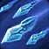
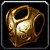

Les étudiants les plus intelligents et les plus disciplinés peuvent envisager une carrière de mage. Comme la magie des arcanes que manipulent les mages est à la fois puissante et dangereuse, elle n’est enseignée qu’à ceux qui la pratiquent avec respect et assiduité. Pour éviter toute interférence avec les sorts qu’ils lancent, les mages ne portent pour armure que de simples vêtements, mais les boucliers arcaniques et les enchantements leur confèrent une protection supplémentaire. Pour prendre le dessus sur leurs ennemis, les mages peuvent invoquer des boules de feu à lancer sur des cibles à distance ou causer l’éruption de toute une zone pour calciner tout un groupe d’adversaires.
DÉGÂTS À DISTANCE
Le mage, qui consomme son mana pour infliger des dégâts importants à une vitesse phénoménale, doit prendre soin d'éviter de se retrouver à cours de « carburant » magique.
 SORTS DE ZONE
Capable d’invoquer un Blizzard, une colonne de feu ou une vague d'énergie arcanique, le mage peut aisément disposer de plusieurs ennemis à la fois.
 CONTRÔLE
CONTRÔLE
Un mage pris au dépourvu dispose de plusieurs moyens pour contrôler le champ de bataille. Il peut notamment geler les ennemis sur place ou les transformer en animaux inoffensifs et souvent adorables.
TÉLÉPORTATION
Le mage a la capacité de se transporter instantanément vers une ville et d’invoquer nourriture et boissons où qu’il se trouve.
 ARMURES ACCESSIBLES
Tissu
Les mages peuvent utiliser des armures de Tissu. Ils ont donc une armure très légère.
 ARMES ACCESSIBLES
ARMES ACCESSIBLES
Baguettes, Dagues, Épées à une main, Bâtons
 TALENTS
TALENTS
Vous pouvez choisir soit la spécialisation Arcanes qui est une école de magie expansives et châtieurs, soit la spécialisation Feu, l'école de magie qui est vives et dévastatrices, ou soit la spécialisation Givre, l'école de magie engourdissantes et entravantes.
les raciaux sont indiqués par ordre d'importance
 Alliance :
Alliance :
 Humain :
Humain : Perception : Une fois activé, augmente considérablement votre Détection du camouflage pendant 20 sec.
Perception : Une fois activé, augmente considérablement votre Détection du camouflage pendant 20 sec. L'esprit humain : Augmente l'Esprit de 10%
L'esprit humain : Augmente l'Esprit de 10% Spécialisation Epée : Augmente l'Expertise avec les Epées et les Epées à deux mains de 5
Spécialisation Epée : Augmente l'Expertise avec les Epées et les Epées à deux mains de 5 Spécialisation Masse : Augmente l'Expertise avec les Masses et les Masses à deux mains de 5
Spécialisation Masse : Augmente l'Expertise avec les Masses et les Masses à deux mains de 5 Diplomatie : Gains de réputation améliorés de 10%
Diplomatie : Gains de réputation améliorés de 10%
 Gnome :
Gnome : Maîtrise de l'évasion : Vous libère des effets d'immobilisation et de réduction de la vitesse de déplacement
Maîtrise de l'évasion : Vous libère des effets d'immobilisation et de réduction de la vitesse de déplacement Résistance aux Arcanes : Résistance aux Arcanes améliorée de 10
Résistance aux Arcanes : Résistance aux Arcanes améliorée de 10 Spécialisation (Ingénierie) : Compétence en Ingénierie augmenté de 15
Spécialisation (Ingénierie) : Compétence en Ingénierie augmenté de 15 Draeneï :
Draeneï : Présence inspirante : Augmente de 1% le toucher des sorts du groupe
Présence inspirante : Augmente de 1% le toucher des sorts du groupe Résistance à l'ombre : Augmente la résistance à l'ombre de 10
Résistance à l'ombre : Augmente la résistance à l'ombre de 10 Lapidaire : Augmente la compétence en Joaillerie de 5
Lapidaire : Augmente la compétence en Joaillerie de 5
 Mort vivant :
Mort vivant : Volonté des Réprouvés : Une fois activé, rend insensible aux effets de Charme, de Peur et de Sommeil. Utilisable même si vous êtes déjà victime d'un de ces effets. Dure 5 sec
Volonté des Réprouvés : Une fois activé, rend insensible aux effets de Charme, de Peur et de Sommeil. Utilisable même si vous êtes déjà victime d'un de ces effets. Dure 5 sec Résistance à l'ombre : Augmente la résistance à l'ombre de 10
Résistance à l'ombre : Augmente la résistance à l'ombre de 10 Respiration aquatique : Respiration aquatique dure 300% plus longtemps que la normale
Respiration aquatique : Respiration aquatique dure 300% plus longtemps que la normale
 Troll :
Troll : Berserker : Augmente la vitesse d'incantation des sorts et d'attaque de 10% à 30% suivent vos points de vie, dure 10 sec
Berserker : Augmente la vitesse d'incantation des sorts et d'attaque de 10% à 30% suivent vos points de vie, dure 10 sec Tueur de bêtes : Augmente les dégâts infligés aux bêtes de 5%
Tueur de bêtes : Augmente les dégâts infligés aux bêtes de 5% Régénération : Vitesse de récupération des points de vie augmenté de 10% même en combat
Régénération : Vitesse de récupération des points de vie augmenté de 10% même en combat Spécialisation Arc : Augmente les chances de réussir un coup critique avec les Arcs de 1%
Spécialisation Arc : Augmente les chances de réussir un coup critique avec les Arcs de 1% Spécialisation Armes de jet : Augmente les chances de réussir un coup critique avec les Armes de jet de 1%
Spécialisation Armes de jet : Augmente les chances de réussir un coup critique avec les Armes de jet de 1% Elfe de sang :
Elfe de sang : Ponction de mana : Draine 50 points de mana à votre cible et vous charge d'énergie des Arcanes pandant 10 min cumulable jusqu'à 3 fois
Ponction de mana : Draine 50 points de mana à votre cible et vous charge d'énergie des Arcanes pandant 10 min cumulable jusqu'à 3 fois Affinité avec les arcanes : Compétence en Enchantement augmentée de 10
Affinité avec les arcanes : Compétence en Enchantement augmentée de 10 Le choix
Le choixToutes ces races ont leurs avantages. Si vous comptez jouer dans l'alliance, la meilleur race est le Gnome avec sa Maîtrise de l'évasion.
Ensuite il y a l'Humain avec la détection des invisibles.
Et pour finir Draeneï qui est plus pour PvE.
Par contre pour la horde, le Mort vivant reste le plus Opti avec la capacité de sortir des effets de Peur et de charme avec la Volonté des réprouvés.
Suivi du Troll avec son accélèration de la vitesse d'attaque qui offre un burst moyen qui est peu utile.
Et pour finir l'Elfe de sang, qui a des raciaux qui peuvent servir pour le PvE.
Après tout va dépendre de votre game play.

 Haut de page
Haut de page